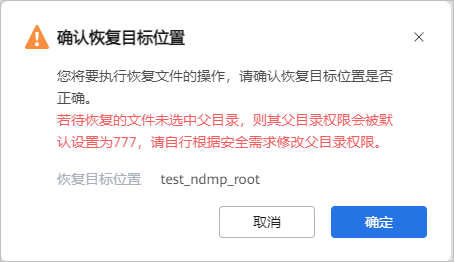

当需要对已备份的NDMP NAS文件系统或文件目录指定文件恢复时，可以参考本节恢复指定的文件至原位置、新位置或者本机位置。
背景信息
- OceanProtect支持使用备份副本、对象存储归档的副本进行文件级恢复。
- 支持索引的文件系统兼容性请登录OceanProtect兼容性查询工具查询。
注意事项
当文件夹或文件名称存在乱码时，不支持文件级恢复。请勿勾选该类型的文件夹或文件，否则恢复失败。
前提条件
- 副本的索引状态必须为“已索引”才支持文件级恢复。
- 如果副本已开启自动索引，则副本的索引状态为“已索引”，可以直接进行文件级恢复。如果未开启自动索引功能，请先单击“手动创建索引”，再进行文件级恢复。
- 如果将NDMP NAS文件系统或文件目录恢复到新位置，需要先将新位置的存储设备添加到OceanProtect。添加存储设备的详细操作请参见步骤1：添加存储设备。
操作步骤
- 选择“数据利用 > 副本数据 > 文件系统 > NDMP”。
- 支持以资源维度或以副本维度查找副本，本节以资源维度为例进行说明。
在“资源”页签，根据名称查找到需要恢复的文件系统或文件目录，并单击名称。
- 在“副本数据”页面，依次选择年、月、天找到副本。
当时间上显示
 ，即表示该月、该天存在副本。
，即表示该月、该天存在副本。 - 找到要恢复的副本，单击副本所在行右侧的“更多 > 文件级恢复”。

链接文件不支持文件级恢复。
- 设置恢复文件的选择方式，并从目录树选择待恢复文件或手动输入待恢复文件的路径。
- 手动输入文件路径时，请输入文件完整路径，例如：/opt/abc/efg.txt或者C:\abc\efg.txt。当输入文件夹路径时，表示恢复该文件夹下的所有文件，例如：/opt/abc或者C:\abc。路径中的文件名区分大小写。
- 选择待恢复的目标对象，及恢复目标位置。
恢复目标位置包含：原位置、新位置。
- 原位置：恢复到原文件系统。
- 新位置：恢复到其他设备的文件系统或原设备的其他文件系统。
表2 恢复至新位置参数说明 参数
说明
存储设备
选择新位置所在的存储设备。
文件系统
选择恢复目标文件系统。
FQDN/IP
访问NAS共享的域名或者业务IP地址。
说明：如果需要填写FQDN名称，请在OceanProtect设备管理界面配置DNS服务，使OceanProtect可以访问外部域名地址。配置DNS服务的详细操作，请参见配置DNS服务。
客户端
系统默认选择内置客户端，当存在外置客户端时，还可以选择外置客户端。
覆盖规则
直接替换已经存在的文件。
说明：若在选择副本时不勾选父目录只选择子内容，则恢复后父目录权限被默认设置为777，请根据安全需求修改父目录权限。
- 配置完“选择恢复目标位置”后单击“确定”。
- 单击“确定”。
